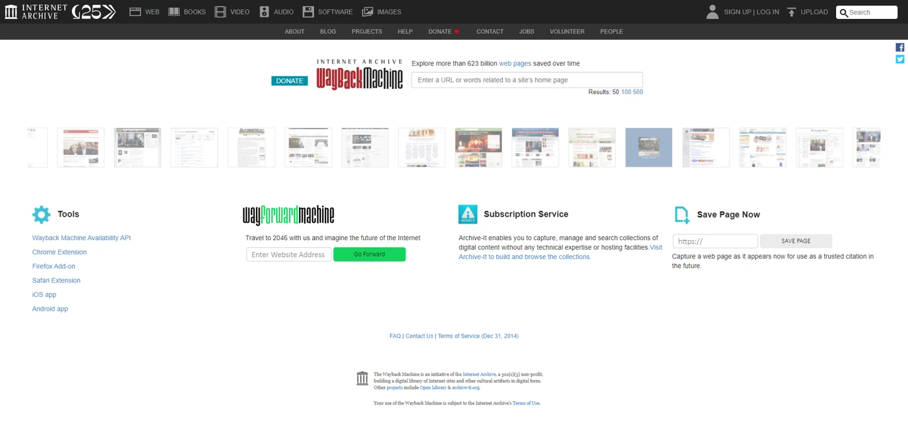

A library for things the web forgets
The Internet Archive is one of the most useful places I know for finding material that would otherwise be difficult to access. It holds books, recordings, films, software and archived websites. It is also part of the infrastructure behind my own experiments: the radio uses Archive audio links, and Bootleg Broadcast depends on archived video sources.
The organisation began in 1996, founded by Brewster Kahle. Its web-preservation work grew into the Wayback Machine, publicly launched in 2001. The point is bigger than nostalgia: websites disappear, links rot and a culture stored entirely on other people’s platforms can become surprisingly fragile.
1. Search for an item, not just a vague topic
- Open archive.org and search for a title, creator, collection or subject.
- Use the media-type and other filters to narrow the results.
- Open an item and read its description, source notes and file list.
- Preview the recording or document before deciding whether it is useful.
A collection can contain many items, while an item can contain several files. Understanding that distinction makes large uploads much less confusing. A television-season item, for example, may contain many episode files as well as thumbnails, metadata and automatically generated alternatives.
2. Find the file you actually need
On an item page, look for Download Options. Show all files when you need a particular format or exact filename. Previewing in the page and downloading the underlying file are different routes; keep the item’s page address as well so you retain its context.
For my web players, I use direct media links. I check the filename and format rather than treating every link in the folder as playable video. Metadata XML, torrent files, thumbnails and alternative encodes all have different jobs.
3. Look backwards with the Wayback Machine
Open web.archive.org, enter the original website’s address and browse its captured history. Choose a year, then an available calendar date and timestamp. You are viewing a saved version of that address, not turning the live website’s clock backwards.
Try comparing several dates. A page may load at one timestamp but be incomplete at another. Images, scripts, logins and linked pages are not guaranteed to have been captured together. Old shops and interactive services should be treated as historical documents, not as working modern checkout or account pages.
For design research, those gaps do not make the tool useless. Old navigation, type, banners and page structures can still show how a site evolved. A working link to the original capture is more useful than a context-free screenshot.
4. Save a page while it still exists
Save Page Now lets you submit a specific public page for capture. Enter the page URL and follow the result. It is useful for your own site or a page you want to reference later, but it is not a promise that every linked page, asset or interaction will be preserved.
5. Explore old games and Flash work
The Archive also preserves software that was made for systems and browser plugins most people no longer have. Its Internet Arcade offers browser-based emulation for many older arcade titles. A game’s item page includes its description and any available controls; loading can take a moment, and sound may need an explicit click.
Flash animations and games are another part of that history. The Archive introduced Ruffle-powered playback for preserved Flash material in 2020. Support varies by title and by the features it used, so a page existing in the collection does not guarantee perfect emulation. I find that more interesting than pretending the old web can simply be restored with one button.
The link scraper we built
My Archive Scraper grew out of a practical problem: copying exact media addresses from a large item or collection by hand is tedious. The tool helps gather and filter links so I can review the files before adding them to a project.
It is a convenience layer, not a guarantee that a source is valid or available forever. I still need to check the file, retain the correct path, and cope with missing uploads, changed availability or a slow Archive server.
Why the Archive matters to Bootleg OS
Pirate Radio uses archived songs to give the site its own soundtrack. Bootleg Broadcast takes media links and adds schedules, channel identities, idents and a CRT-style interface around them. Without a place hosting and cataloguing those sources, the broadcast idea would be much harder to build.
That dependence also creates a responsibility to design around failure. A removed file or a delayed response should produce an understandable message, rather than a player that silently stops forever. It is one reason the radio and broadcast projects keep receiving updates.

Support the library you use
Preservation needs storage, bandwidth, staff and maintenance. If you use the Archive regularly, consider supporting the organisation directly, improving an item’s description when you have reliable information, or preserving your own original work with useful metadata.
The Archive is a resource worth keeping alive, not an invisible free server that owes every project uninterrupted service.